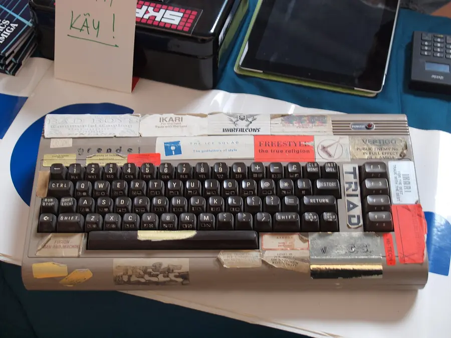
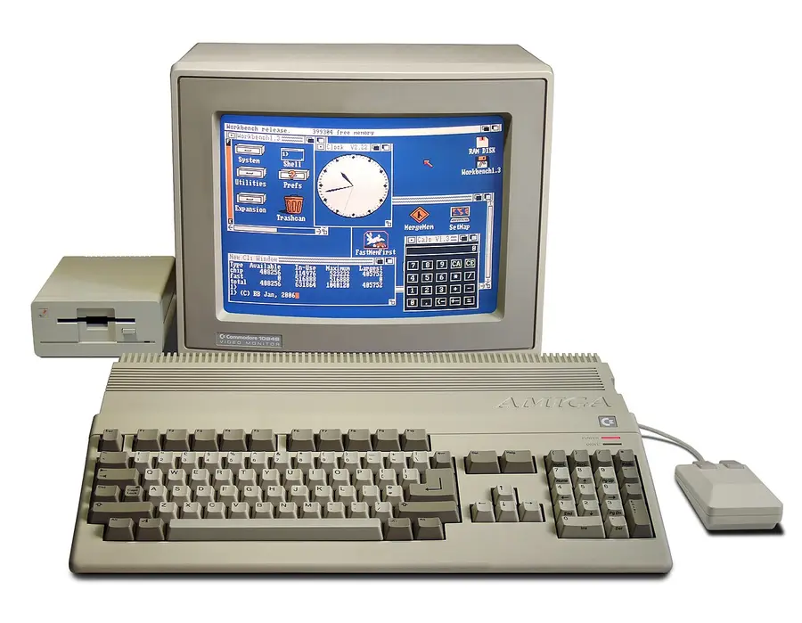
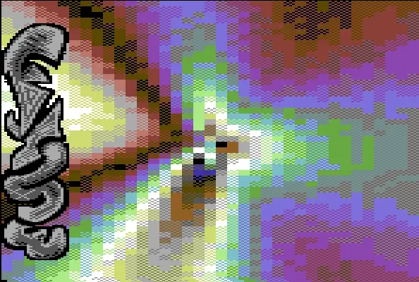
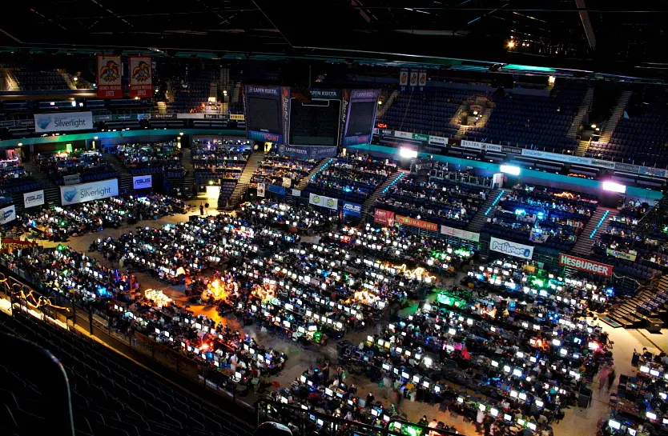
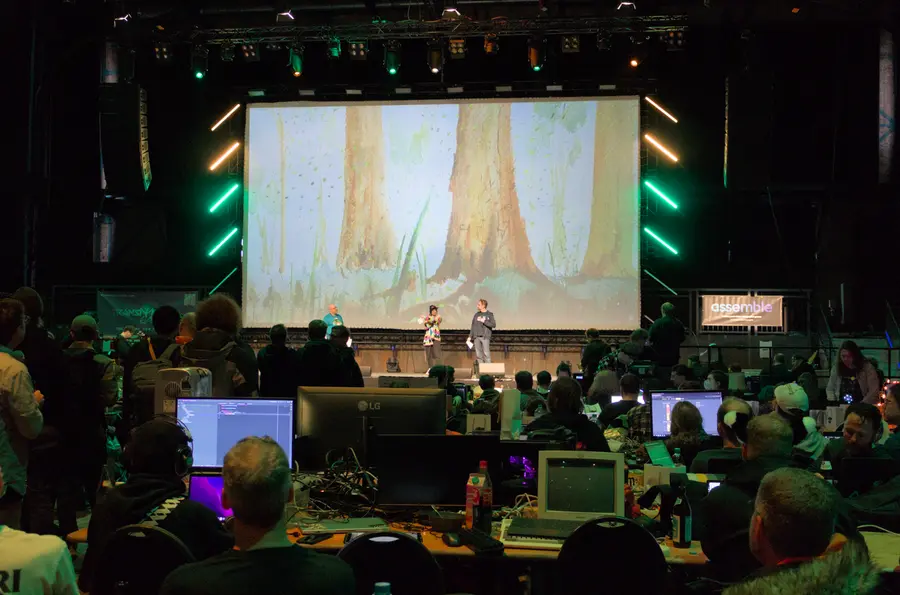

Computer Science · Graphics & Games · Digital Art
The Demoscene
A demo is a computer program that isn't a game or a tool. It is a music video that the computer draws live, 60 times a second, from code. The people who make demos, called the demoscene, have competed for 40 years to squeeze impossible-looking graphics out of machines everyone else thought were maxed out. Some of their best work fits in a file smaller than a single photo on your phone.
Where It Began: Hackers Signing Their Work
In the early 1980s, home computers like the Commodore 64 arrived in millions of bedrooms. Games came on disks protected against copying, and groups of teenage "crackers" competed to break that protection first. To take credit, they added a short animated title screen to the copied game with their group's logo, a scrolling message, and music. This was called a cracktro (crack + intro).
Soon the cracktros became more impressive than the cracking. Groups competed over who could make the smoothest scrolling text, the most colors, or effects the machine was "not supposed to" be able to do. By the late 1980s many groups dropped the copying altogether and made stand-alone demos, legal works of art built only to show off. The Commodore Amiga, released in 1985, with its custom graphics and sound chips, became the scene's favorite machine.



Wasn't cracking illegal?
Tiny Programs, Huge Worlds
Demo competitions are split into categories, and the most famous categories have a size limit. A 64k intro must fit, pictures, 3D models, music and all, in 65,536 bytes. A 4k intro gets 4,096 bytes. Some contests allow only 256 bytes, which is shorter than this paragraph.
How can a whole animated film fit in a file that small? The trick is to store no pictures or recordings at all. The program stores the recipe, the math that describes a texture, a shape, or a melody, and cooks it when it runs. That is procedural generation, and the craft of cramming it into the fewest bytes is sizecoding.
The screenshot bar is cut off. Drawn to scale it would be about 95 times longer than the 64k bar.
Where does 1920 × 1080 × 3 come from?
Effects Lab: Classic Demo Effects
Demos are built from a vocabulary of classic effects, each one a small formula run for every pixel or object on every frame. Pick one below and watch it run live in your browser. The byte counter shows how big the JavaScript for that effect really is. It is read from the running code, not typed in by hand.
Why are demos so full of sine waves?
sin() gives motion that loops with no jumps. Adding a few sine waves of different sizes and speeds gives patterns that look organic and never quite repeat. The plasma, the scroller's bounce, and the tunnel's twist are all sine waves added together. Old machines were too slow to calculate sin(), so coders precomputed a small table of values once and looked them up every frame.What are "greetings"?
Demoparties and Living Heritage
Demos are premiered at a demoparty. Hundreds or even thousands of sceners bring their computers into one hall for a weekend, finish their work on site (often with no sleep), and show it on a giant screen. The audience votes, and winning a big competition earns a lot of respect. The largest parties include Assembly in Helsinki, Finland (since 1992) and Revision in Saarbrücken, Germany, held every Easter.


In 2020 Finland became the first country to add the demoscene to its national list of intangible cultural heritage, the same kind of list that protects folk dances and traditional crafts. Germany, Poland, the Netherlands, and other countries followed. The scene is now officially recognized as a living art tradition.
Its influence is everywhere. Many sceners went on to work at game studios and graphics companies. Real-time effects in games, music visualizers, live concert visuals, and shader art sites all trace back to techniques the demoscene pioneered.
Discussion: why build under a limit?
Practice Problems
Check what you know about the scene's history, tiny programs, and the math behind classic effects.
Easy1. What is a demo?
Easy2. The demoscene grew out of short animated screens that crackers added to copied games. What were they called?
Medium3. A 64k intro may be 65,536 bytes. A 4k intro may be 4,096 bytes. How many 4k intros fit in the size of one 64k intro?
Medium4. How can a 64k intro show detailed textures and play a full soundtrack?
Medium5. A demo runs at 60 frames per second. How many frames does it draw during a 3-minute demo?
Medium6. Which function gives demo effects smooth motion that loops forever with no jumps?
Challenge7. A 320 × 200 screen (a classic PC demo resolution) uses 1 byte per pixel. How many bytes is one full frame?
Challenge8. In 2020, Finland added the demoscene to its national list of what?